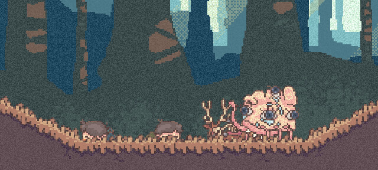
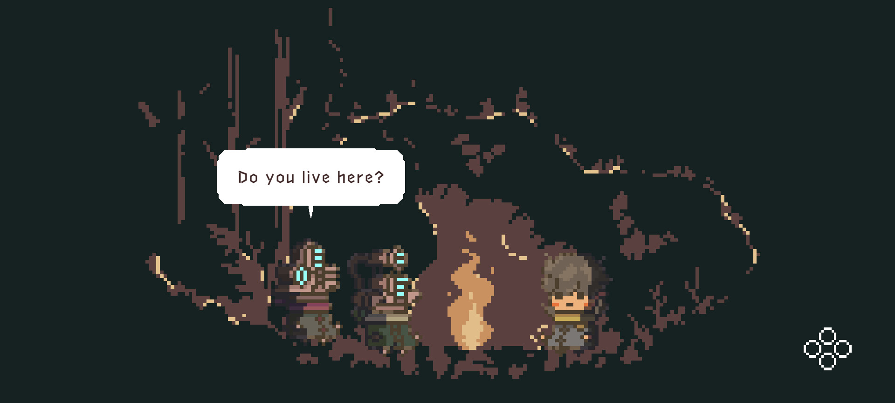
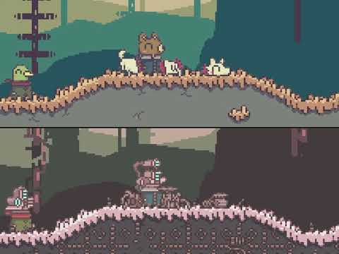
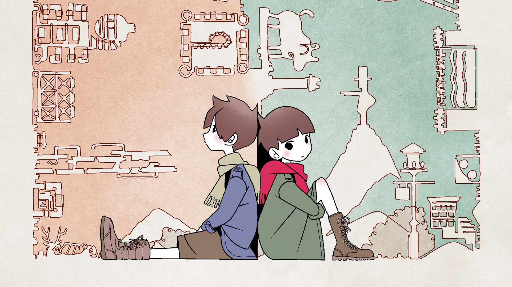

Synopsis
The story starts off with the two, once best friends, riding a train. They talk about current events until they start to reminisce about the fateful winter where they stopped being friends. We travel back to the past as the two boys play Pakemon, while subtly saying their problems at home. The two start talking about the statue in the mountain and decide to go on a journey to break it together. After breaking the statue, the blue kid wants to run away with the green kid. He is hesitant for a second but then agrees.
As they explore through the forest, the two come across a dead animal. After inspecting it, the two pass out. A monster comes up to the boys, looking like it’s inspecting them, then walks off. When the boys wake up, that’s when they are introduced to the two different realities: the green kid sees animals and vibrant colors while the blue kid sees robots and duller tones. They encounter characters who appear differently based on these perspectives.
As they continue, they must make decisions and solve puzzles based on what they each see. Eventually, they encounter a mysterious boy who stands out from both realities. They rest in a cave, then reach the mountaintop again and attempt to destroy the statue with fireworks, which fails. They laugh and pass out again, awakening to see the world as normal.
The blue kid decides not to run away, and the green kid supports him. They face a final challenge involving a monster and a life-or-death moment, where one saves the other and rescues a swallowed woman. Back on the train, they reflect on what happened, and we learn they drifted apart afterward.
Gameplay

The game is a two-player co-op puzzle platformer. The players explore as children and then transition into different perspectives: one sees animals, the other machines. Players must communicate effectively as they interact with different objects and experience cutscenes differently. Their decisions influence later events, and the soundscape changes with each reality.
Characters
Blue Kid (Age 10): Lives with his mother, who often goes to the bar. Grew up without much money and wishes his parents didn’t fight.
Green Kid (Age 10): Comes from a wealthy family, but his parents ignore him. Thinks all parents argue.
Through their journey, we see how each child processes family and emotional struggles. Their interactions with others reveal deeper layers of their personalities, especially during the campfire dialogue. The game culminates in a resolution that shows how each boy has grown from the experience.